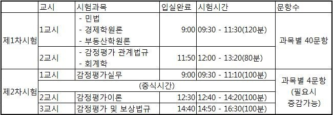
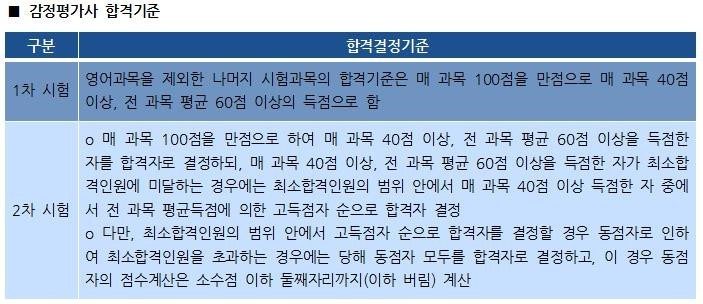
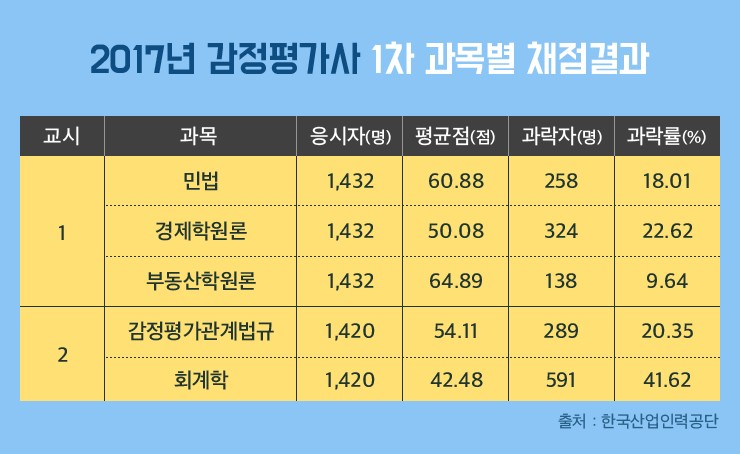

- 감정평가사란 무엇인가?
- 감정평가사 시험에 관하여
- 시험공략법
감정평가사 자격조건
감정평가사 시험은 회계사 등과는 달리 필수 이수학점이 필요하지 않고, 나이, 경력, 전공,학력 등의 제한을 두고 있지 않습니다.
다만, 결격사유에 해당된다면 원칙적으로응시가 금지되며, 시험을 보고 합격을 하더라도 합격이 취소가 됩니다.
*감정평가사 결격사유*
1. 미성년자 또는 피성년후견인·피한정후견인
2. 파산선고를 받은 사람으로서 복권되지 아니한 사람
3. 금고 이상의 실형을 선고받고 그 집행이 종료
(집행이 종료된 것으로 보는 경우를 포함)되거나
그 집행이 면제된 날부터 3년이 지나지 않은 사람
4. 금고 이상의 형의 집행유예를 받고 그 유예
기간이 만료된 날부터 1년이 지나지 않은 사람
5. 금고 이상의 형의 선고유예를 받고 그 선고
유예기간 중에 있는 사람
6. 제13조에 따라 감정평가사 자격이 취소된 후
3년이 경과되지 않은 사람
7. 제39조제1항제11호 및 제12호에 따라자격이
취소된 후 5년이 경과되지 아니한 사람
주의해야 할 점은 영어시험 토익700점, 지텔프65점 등 어학 성적이 있어야 시험에 응시 가능합니다.
시험과목, 합격기준

시험은 1차, 2차 시험으로 나뉘어집니다.
1차 시험은 민법, 경제학원론, 부동산학원론, 감정평가 관계법규, 회계학 총 5과목을 시험봐야 합니다.
2차 시험은 감정평가이론, 감정평가 및 보상법규 2과목에 대한 시험을 보게됩니다.

1차 시험 합격기준은 매 과목 40점, 전 과목 평균 60점 이상 득점을 해야 2차 시험을 볼 수 있는 자격이 주어집니다.
2차 시험 합격기준은 매 과목 40점, 전 과목 평균 60점 이상을 득점해야하고, 만약 득점한 자가 최소 합격 인원에 미달하는 경우 매 과목 40점 이상인 수험자 중 전 과목 평균득점에 의한 고득점자 순으로 합격자를 결정하게 됩니다.
1차시험 합격의 당락을 결정하는 과목은?

1차 시험 합격의 당락을 결정하는 과목은 회계학으로 나타났다. 아무래도 방대한 범위, 익숙하지 않은 계산들이 이유가 될 것 같다.